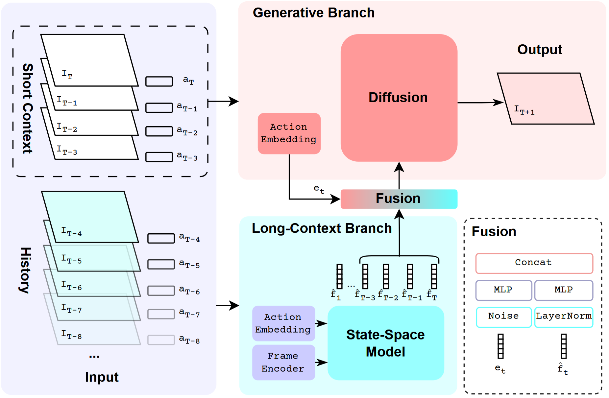
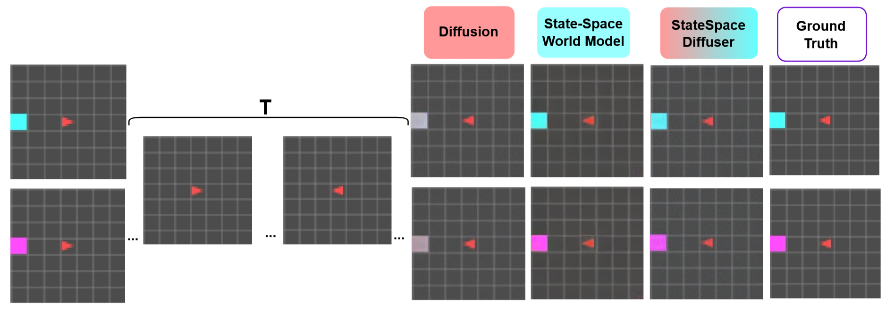
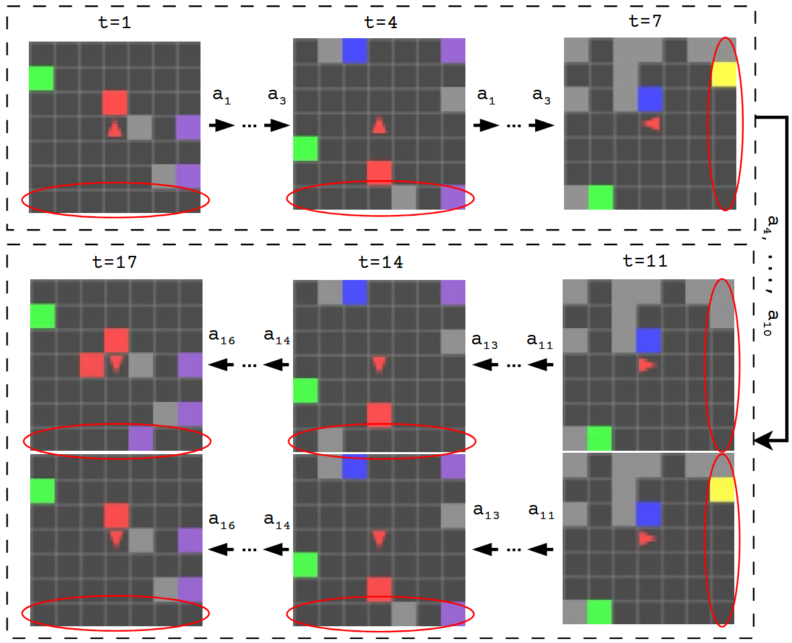
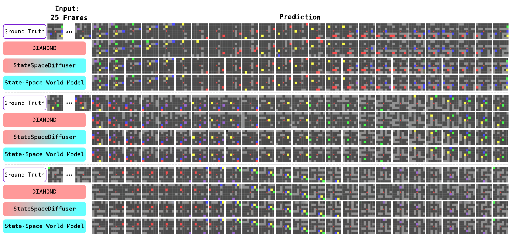
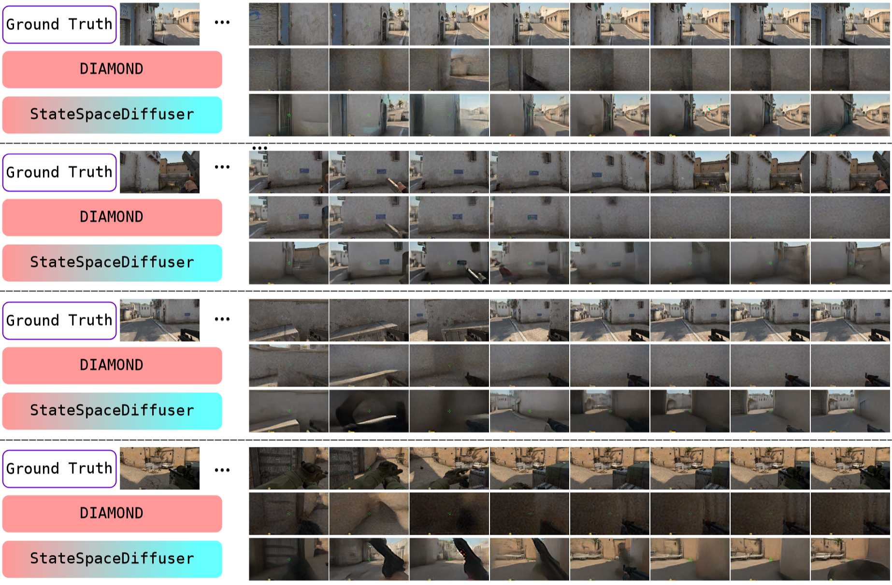
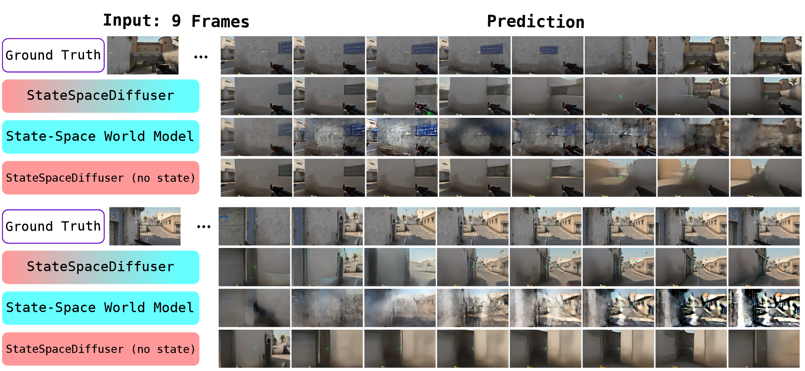
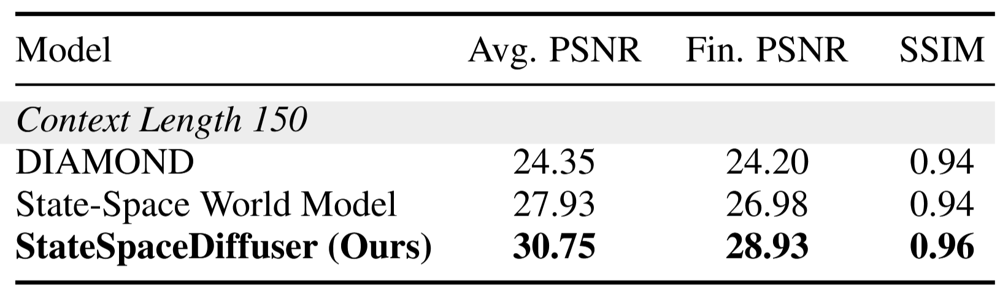

World models have recently become promising tools for predicting realistic visuals based on actions in complex environments. However, their reliance on only a few recent observations leads them to lose track of the long-term context. Consequently, in just a few steps the generated scenes drift from what was previously observed, undermining the temporal coherence of the sequence. This limitation of the state-of-the-art world models, most of which rely on diffusion, comes from their lack of a lasting environment state. To address this problem, we introduce StateSpaceDiffuser, where a diffusion model is enabled to perform long-context tasks by integrating features from a state-space model, representing the entire interaction history. This design restores long-term memory while preserving the high-fidelity synthesis of diffusion models. To rigorously measure temporal consistency, we develop an evaluation protocol that probes a model's ability to reinstantiate seen content in extended rollouts. Comprehensive experiments show that StateSpaceDiffuser significantly outperforms a strong diffusion-only baseline, maintaining a coherent visual context for an order of magnitude more steps. It delivers consistent views in both a 2D maze navigation and a complex 3D environment. These results establish that bringing state-space representations into diffusion models is highly effective in demonstrating both visual details and long-term memory.
StateSpaceDiffuser consists of a Long-Context Branch and a Generative Branch. The former employs a state-space model to compress the entire history, and the latter uses a diffusion model to generate high-fidelity frames.

On the first frame, we see the color of a single marker. The agent moves away and then returns for a total of 50 frames. Can diffusion predict the right color?
A typical diffusion world model is limited of how many frames it can take as input and cannot recall the color, while our StateSpaceDiffuser model correctly completes this task.

Given all frames so far in a sequence (up to 50 frames), the goal is to predict the next frame. We navigate a maze along a random path and return back. Can we recall the layout in the next step?
Diffusion world models consistently misremember the layout of the next step, while StateSpaceDiffuser, maintaining memory via the state-space model, always predicts the correct layout observed in previous steps.


In CSGO, we navigate along a given path. Only given this path, we reverse our actions and attempt to return along the way.
It is evident that the diffusion baseline quickly gets confused and predicts incorrect scenes. In contrast, having compressed history representation at hand, StateSpaceDiffuser is able to maintain temporal consistency.

We deomenstrate that without the state of the state-space model, the diffusion model hallucinates. Conversely, a state-space model without diffusion cannot render high-fidelity scenes.

Using the MiniGrid setup, we demonstrate that StateSpaceDiffuser trained on context length 50 can generalize to 150 steps:

We introduce StateSpaceDiffuser, a novel world model that integrates state-space models with diffusion models to achieve temporally coherent long-horizon rollouts. Our experiments demonstrate that StateSpaceDiffuser significantly outperforms diffusion-only baselines in maintaining context over extended sequences, as evidenced in both 2D and 3D environments. This work highlights the effectiveness of combining state-space representations with diffusion synthesis for advancing the capabilities of world models.
@inproceedings{savov2025statespacediffuser,
title={{StateSpaceDiffuser: Bringing Long Context to Diffusion World Models}},
author={Savov, Nedko and Kazemi, Naser and Zhang, Deheng and Paudel, Danda Pani and Wang, Xi and Van Gool, Luc},
booktitle={Advances in Neural Information Processing Systems},
year={2025}
}